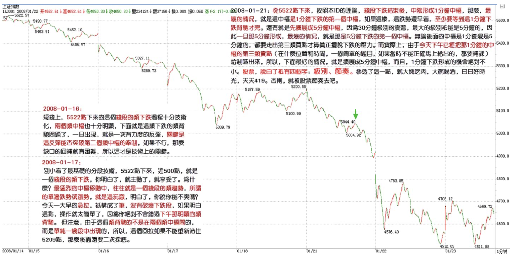

教你炒股票94：当机立断
2008/1/21 17:29:47
本ID说过，要学本ID的理论，首先要洗心革面。为什么？因为你前面一切关于股票的知识，可能都是后面学习的毒药。在本ID这里，只有严格分类后的不同操作类型，没有其他那么多无聊的不切边际的所谓预测。
一句话，来本ID这里学习，第一层次，就是要达到：当机立断。
机会，是可以预先分析的，但这分析，不是预测，而是建立在完全分类基础上的边界分划，这分划完全来自本ID理论的纯数学构造，这构造的唯一性与精确性保证了这分类与边界的当下确认性。
其实，这问题已经说过，但必须再次说，为什么？因为这是一种完全不同的思维方式，如果你不能明白，就永远与本ID的理论无缘。

例如，在现在，对以后的大盘走势，我们马上可以分析出所有必然出现的机会：1、一个最小的机会，就是大盘线段下移后形成的线段类背驰，这里对应这两个目标，最好的是回拉上面的1分钟中枢从而形成5分钟中枢，剩下的就是形成第二个1分钟的下跌中枢。
2、第一个机会出现后，根据演化的当下选择，马上可以找到下一个必然出现的机会，就是如果是5分钟中枢，那么就有着一个中枢震荡的机会；如果是1分钟的第二中枢，那么就等着后面的底背驰或者这中枢扩展为5分钟后的震荡机会。
类似地，对任何走势，我们都可以根据理论，马上严格地给出必然出现的机会。市场就是这么贱，虽然折腾无数的人，但就是从来没有任何失误地按照本ID的理论去走，所以，本ID可以把市场叫为面首。
任何一个当下，你都可以根据本ID的理论马上给出后面必然要出现的机会。上面说的是买点，卖点的情况是一样的。
好了，你根据理论，可以罗列出一大堆必然出现的机会。后面面临的，只是选择问题。例如，第1个机会，你会觉得级别太小，不想搞。那么不想搞就不想搞了，就像一个面首，你见了不想搞，难道还需要什么理由？
你真正明白了本ID的理论，操作其实就是这么简单，唯一需要问自己的，就是你现在有没有搞的兴趣，这个机会，这个面首，在这一刻，你想搞吗？
如果你想搞，那么，你就需要一系列的准备，通道的、资金的、一切的安排都要安排好，然后关键要把退出的边界条件也设置好。
例如，对于第1个机会，设置的退出条件，就可以是原来的最后一个类中枢，或者是线段向上走势类型中的类背驰或类盘整背驰。
当然，根据这样的设置条件，在T+1条件下，你完全有可能走不出来，为什么？因为这买卖点可能就在当天完成了，买了卖不掉。所以，在设置时，可能还要参考机会出现的时间，如果在早上，可能要考虑一下。如果在下午，那就胆子可以大点。
当然，这还和你自己实际的情况有关，例如一个中线走势极为良好的股票，如果一个线段下跌就去掉了20%，而你又在高位跑掉了，那这个回补机会当然就可以胆子大点。
更容易的，就是把级别放大点，如果你按周线操作，那么从2005年下半年买了到现在，你根本连一次都不需要操作，谁告诉你本ID的理论只做短线的？是孔男人告诉你的吧？
对于每种机会类型，都需要把各种可能的出现情况都考虑清楚，这样可以判断其力度，从而绝对进出的资金量。这就如同419，你今天想419了，但总要看到真正的货后，才能决定这投入的量。谁告诉你419就一定要奋不顾身的？419难道就不可以见了就撤？从见了就撤到奋不顾身，这里可以有无数的情况出现，当机立断，这就是唯一的。
学了本ID的理论，脑子里必须时刻有两个字：级别。如果连级别都搞不清楚，你还419？被419还差不多。有了级别，就是节奏问题了，419，就是见好要收，而不是天长地久，这都不明白，就等着灾难连连吧。
不会卖出，就等于失去了下次买入的机会。这个节奏之所以难，说白了，就是贪嗔痴疑慢作怪。
对于初学者，一定要机械地给点束缚，等于那死猴子带上个圈圈。这个束缚，就是5周、5日这些线，一旦分型后有效破了，一定走，这就是束缚。当然，对熟练的，就不需要这些了，严格的走势分类自动就给出一切。
练习的第一步，很简单，就是在任何时刻点位，都能马上把后面根据理论把机会第一时间反应出来。
注意，任何的机会，必然在本ID理论的输出中。市场的机会与本ID理论的输出，是严格一一对应的。这就是本ID理论所以厉害的其中一面。
第二步，根据自己当下的心情、资金等等，选择介入的机会，放弃不想介入的机会。
然后就等待机的显现，当机立断，就这么简单。但，这最后一步，足够你修炼N年了。